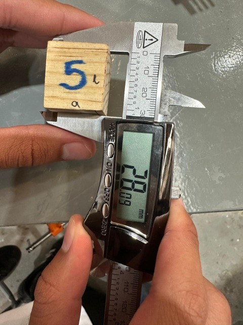
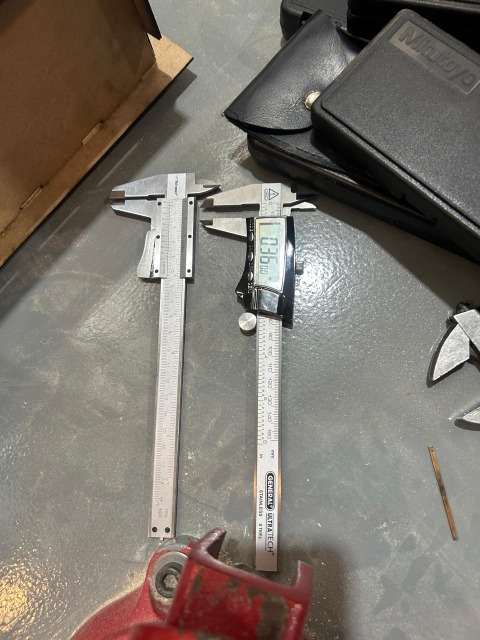
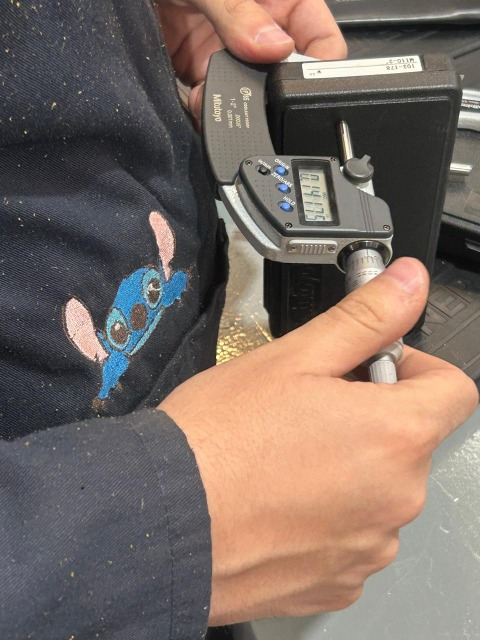
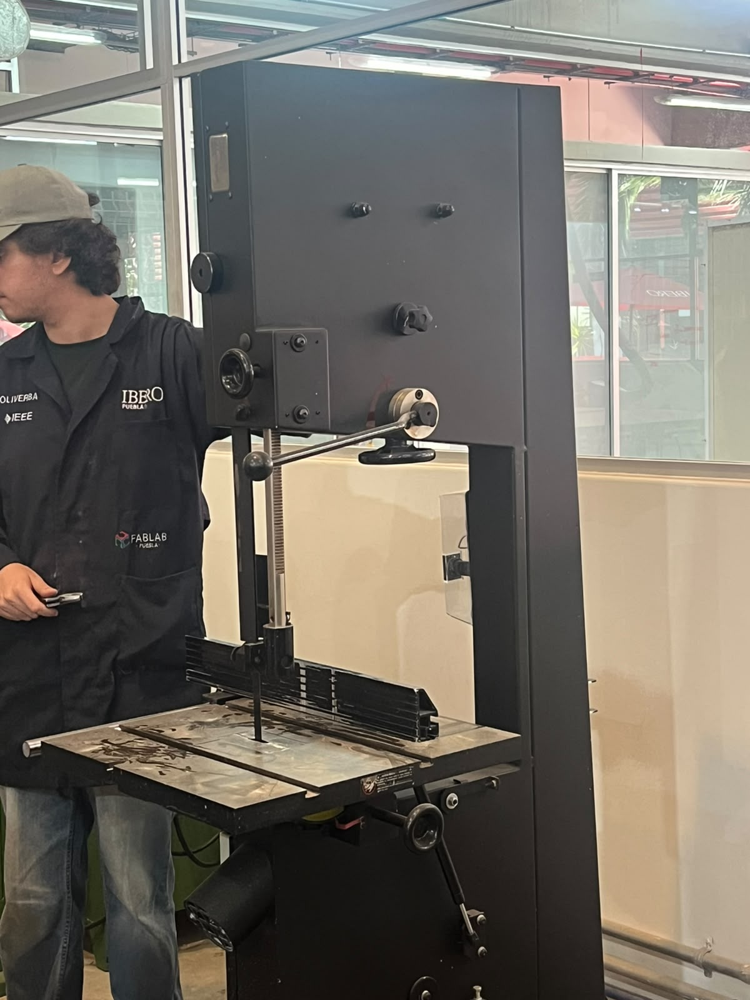
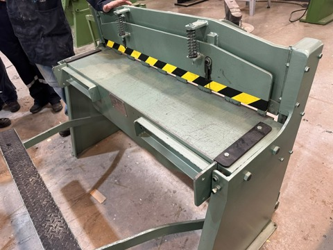
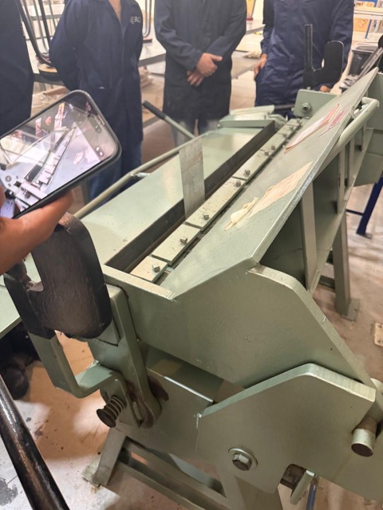
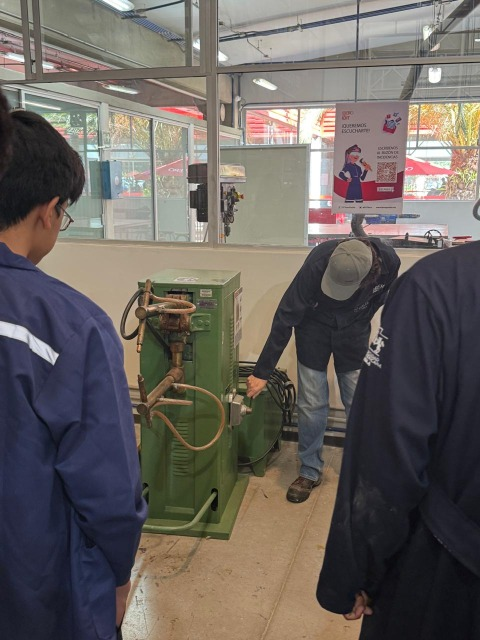

Práctica 3: Metrología y Procesos de Maquinaria Básica en el IDIT
Institución: Universidad Iberoamericana Puebla (Ibero Puebla)
Materia: Proyecto de Ingeniería
Alumno: Carlos Mario Díaz Moscoso
Profesor: Oliver Ochoa García
Fecha: 25 de septiembre de 2026
1. Introducción
Comenzamos la sesión reuniéndonos en el taller con el profesor Oliver, quien nos dio un recorrido práctico para enseñarnos el manejo correcto de las herramientas de medición de precisión y explicarnos el funcionamiento real de las máquinas básicas con las que procesamos materiales en el laboratorio.
2. Metrología e Instrumentos de Medición
Durante la primera parte de la práctica, el maestro nos fue mostrando las diferencias de uso y aplicación entre cada instrumento: * Calibrador Vernier (Pie de Rey): Aprendimos a tomar lecturas exteriores, interiores y de profundidad con un solo instrumento. También comparamos el vernier analógico contra el digital, notando lo ágil que es este último para leer directo en pantalla y cambiar unidades. * Micrómetro (Pálmer): Nos mostró que es el instrument ideal para cuando requerimos máxima precisión en espesores o diámetros pequeños. En el modelo digital probamos la función INC (Incremental), la cual permite poner la pantalla en cero en cualquier punto para comparar diferencias de tamaño entre piezas de forma inmediata.
2.1. Registro Experimental de Mediciones en Cubos de Prueba
Para poner en práctica lo aprendido, tomamos mediciones en cinco cubos de prueba utilizando ambos instrumentos :
Mediciones con Micrómetro (Resolución en milésimas de milímetro, \(\text{mm}\)) :
| Identificador de Cubo | Ancho (\(a\)) | Largo (\(l\)) | Alto (\(h\)) |
|---|---|---|---|
| Cubo 3 | \(26.645\text{ mm}\) | \(34.512\text{ mm}\) | \(22.535\text{ mm}\) |
| Cubo 8 | \(29.780\text{ mm}\) | \(43.455\text{ mm}\) | \(29.872\text{ mm}\) |
| Cubo 10 | \(38.870\text{ mm}\) | \(38.828\text{ mm}\) | Excede capacidad micrómetro |
| Cubo 11 | \(31.265\text{ mm}\) | \(27.162\text{ mm}\) | \(28.452\text{ mm}\) |
| Cubo 12 | \(29.215\text{ mm}\) | \(33.845\text{ mm}\) | \(26.885\text{ mm}\) |



Mediciones con Calibrador Vernier (Resolución en centésimas de milímetro, \(\text{mm}\)) :
| Cubo | A (Ancho) | L (Largo) | H (Alto) |
|---|---|---|---|
| 5 | \(25.89\text{ mm}\) | \(28.09\text{ mm}\) | \(23.35\text{ mm}\) |
| 15 | \(46.96\text{ mm}\) | \(50.17\text{ mm}\) | \(23.23\text{ mm}\) |
| 17 | \(32.21\text{ mm}\) | \(41.34\text{ mm}\) | \(29.89\text{ mm}\) |
| 6 | \(32.34\text{ mm}\) | \(43.45\text{ mm}\) | \(28.55\text{ mm}\) |
| 16 | \(30.01\text{ mm}\) | \(37.00\text{ mm}\) | \(25.34\text{ mm}\) |
3. Maquinaria de Corte y Maquinado
- Fresadora (Titanium TMD-50PRO): El maestro nos remarcó una diferencia clave en el taller: la broca únicamente perfora de forma vertical (eje Z), mientras que la fresa tiene filos a los lados y al frente, permitiendo cortar también horizontalmente (ejes X, Y) para hacer desbastes, ranuras y aplanados. Nos enseñó el cabezal, la perilla de RPM y el manejo de la mesa mediante manivelas, explicándonos la regla de empape (no comer más de la mitad del diámetro de la fresa a lo ancho) para no sobrecalentar el material ni romper la herramienta.
- Sierra de Cinta para Madera (Urrea): Revisamos esta máquina de banco que utiliza una cinta metálica con dientes sobre poleas para hacer cortes continuos tanto rectos como con curva en madera.


4. Deformación y Corte de Lámina Metálica
- Guillotina Mecánica Manual: El profesor nos mostró cómo se utiliza para hacer cortes rectos en láminas delgadas presionando la palanca inferior de pedal.
- Dobladora de Lámina (Prensa de Doblado Dynamo): Nos explicó su función para hacer pliegues y pestañas angulares uniformes al bajar la cortina o regla superior sobre la matriz de la pieza.


5. Procesos de Unión: Soldadora por Puntos
Por último, el profesor Oliver nos mostró cómo opera la soldadura por resistencia, la cual une dos láminas de metal al presionarlas con dos electrodos de cobre y soltar un chispazo rápido de alta corriente que funde el punto de contacto sin necesitar material de aporte.

6. Conclusión
En lo personal, esta práctica me sirvió muchísimo para perderle el miedo al equipo del taller y entender de forma directa cómo pasar de la teoría a la medición y maquinado real. Aprender a cuidar los detalles en el vernier o el micrómetro y ver el funcionamiento de máquinas como la fresadora me da mucha más confianza para realizar proyectos futuros en la carrera.